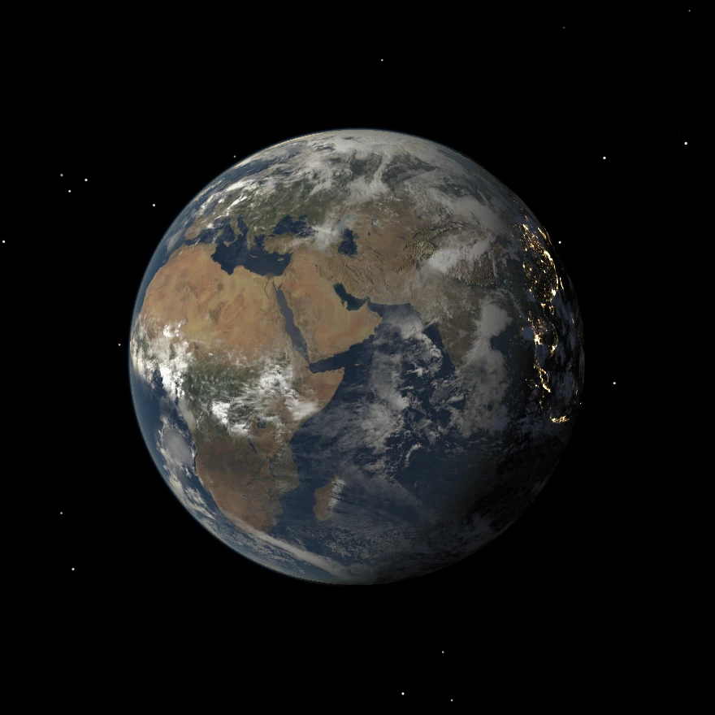

World Atlas · Static preview
Where is it daylight?
The globe needs WebGL 2 in this browser. Explore a captured view of the atlas and follow the boundary between day and night.
Follow the daylight boundary
Start in the bright midday region, then trace the dim edge of the globe into night. As Earth rotates, cities cross that boundary and their lights appear in the dark.
The solar position is modelled for 21 June 2026 at 12:00 UTC. The underlying land imagery comes from NASA Blue Marble and the night lights from NASA Black Marble.
